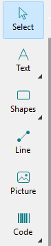
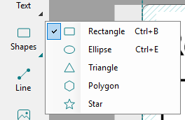
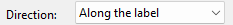
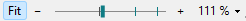

Tools, direction and zoom
The direction decides how the content lies on the tape. The zoom only changes the size on the screen, not the print.
-
Tool palette
The tools are on the left, in five groups: Text, Shapes, Line, Picture and Code. A click adds the tool whose icon the group shows.
A small triangle in the bottom right corner means the group has several tools. Click the triangle or press and hold to open the list, or press → when the group is selected. The group then shows the tool you used last, also when you added it from the menu or with its key, and also the next time you start.


- Text
- Artistic text (one line) and paragraph text (wraps in its box), see Artistic and paragraph text
- Shapes
- Rectangle, ellipse, triangle, polygon, star, see Shapes
- Code
- Barcode and QR code, see Barcodes and QR codes
Every tool is also in the Insert menu. The palette takes less room without names: View > Show tool names or right-click the palette. When the window is too low, the palette gets a second column.
View > Show overflow while editing belongs to paragraph text: see Paragraph text.
-
Direction
On the right in the settings while nothing is selected, or View > Turn view:

- Along the label
- The label's length runs from left to right. For long labels.
- Across the tape
- The tape's width runs from left to right. For short, wide labels such as 62 × 29 mm and for round labels.
A new label starts across the tape if it is no longer than it is wide, otherwise along. When you turn the view, the objects stay where they are on the screen; the label prints as it is shown. The direction is saved with the label, and Ctrl + Z undoes it.
-
Zoom
At the bottom right of the status bar:

Fit fits the label to the window and keeps it fitted when you make the window larger or smaller. Minus, the slider and plus zoom from 25 % to 800 %, and so does the mouse wheel over the label and the grey area around it (around the pointer, with or without Ctrl) and over the status bar. Shift + mouse wheel scrolls left and right; up and down with the scroll bars. A wheel tilted sideways scrolls left and right too.
Clicking the percentage opens this menu; it is also under View:
- Fit
- the label fits the window
- 100 % (real size)
- the label as large as it prints
- Dot for dot
- 1 or 2 screen pixels per printer dot. Only here does the canvas show every printer dot sharp; at any other zoom it is smoothed so that dithered pictures show no stripes.
The slider snaps to 100 % and to the dot-for-dot steps.